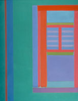

|
 |
ACA 2003 Sessions (Current
List)
| Organizer |
Session Topic |
| Karin Gatermann
(Berlin) |
Computer
Algebra and Polynomial Systems in Chemistry |
| David Jeffrey
(Western Ontario) and Raya
Khanin (Glasgow) |
Industrial Applications of Computer Algebra |
|
Laurent Bernardin
(Waterloo Maple Inc.)
|
Applications of Maple |
| Mike Dewar
(NAG, UK) |
Mathematics on the Internet |
| Alkis Akritas
(Thessaly, Greece), Michael Wester (New Mexico), Bill Pletsch
(New Mexico) |
Computer
Algebra in Education
|
| Ilias Kotsireas
(Laurier, Canada) |
Celestial Mechanics |
| B.
David Saunders (Delaware) and Gilles Villard (ENS Lyon)
|
Symbolic Linear Algebra |
|
Amit Khetan and Carlos
D'Andrea (UC Berkeley, USA)
|
Elimination
Theory |
| J.
Schicho and Mohamed
Shalaby (RISC Linz, Austria) |
Symbolic-Numeric
methods for Curves and Surfaces |
| Victor Shoup (New York) |
Cryptography and Computer Algebra |
| Quoc-Nam Tran
(Lamar University, USA) |
Groebner Bases and Applications |
| Tony Shaska
(UC Irvine) |
Computational
aspects of algebraic curves |
| Sergei A. Abramov
(Moscow), Marko
Petkovsek (Ljubljana), Eugene
V. Zima (Waterloo) |
Symbolic
Summation |
| Mark Giesbrecht
(Waterloo) and Stanly
Steinberg (New Mexico) |
Young
Investigators |
| Please
contact session organizers for more information on sessions |
|
Instructions for Organizing
a Special Session
Special sessions are held in one or more two-hour blocks of time, each
of which typically consist of four 1/2 hour talks or a one hour overview
and two 1/2 hour talks. These times include time for questions. It is
preferable that sessions have two organizers, one experienced person and
a younger colleague or student.
To propose a special session, please send
- contact information of the organizers,
- the title of the special session,
- a short abstract describing the special
session,
to the conference program chair,
Mark Giesbrecht <mwg@uwaterloo.ca>
The Scientific Committee will review the proposal.
The duties of the session organizers are:
- Submit a proposal for the session to the
conference general chairs
- Invite the speakers
- Maintain a web page describing the session
with abstracts for the talks.
Examples can be found on the ACA web page. ACA can assist you with the
web page.
The scientific quality of a special session
is the sole responsibility of the session organizers.
Sample
letter of invitation
|
|
|